Digital System Circuits week 12
D Latch vs. D Flip-Flop

Clock signal
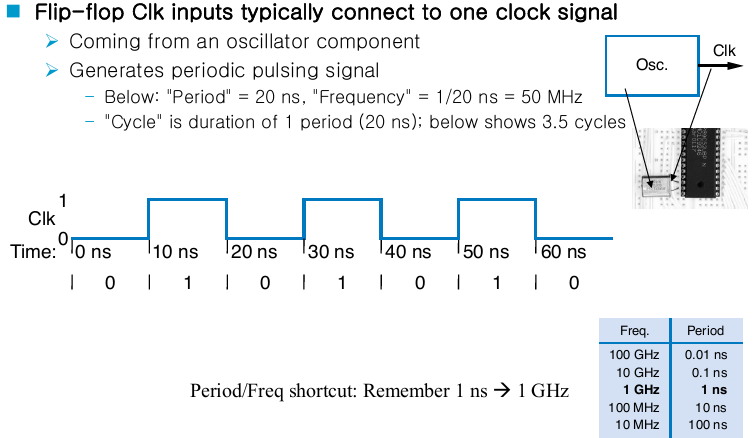
Bit storage summary
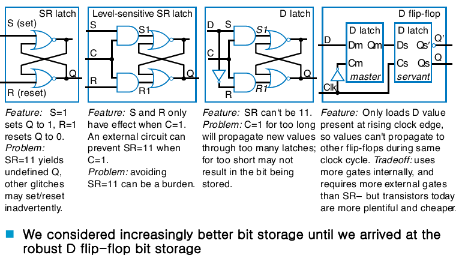
Assignment types: procedural assignment
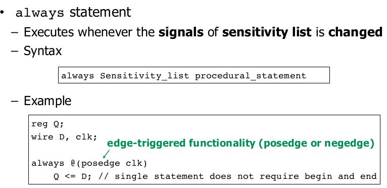
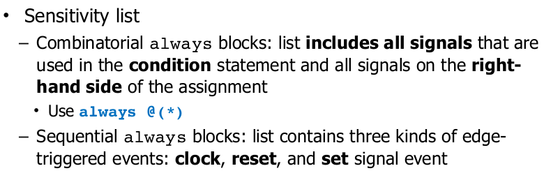
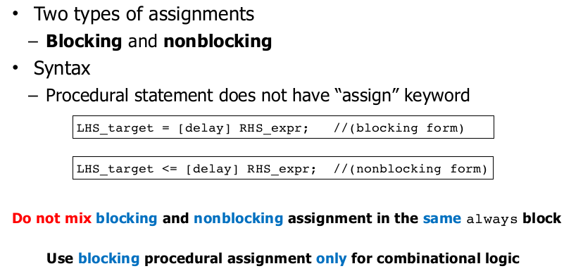
Blocking procedural assignments
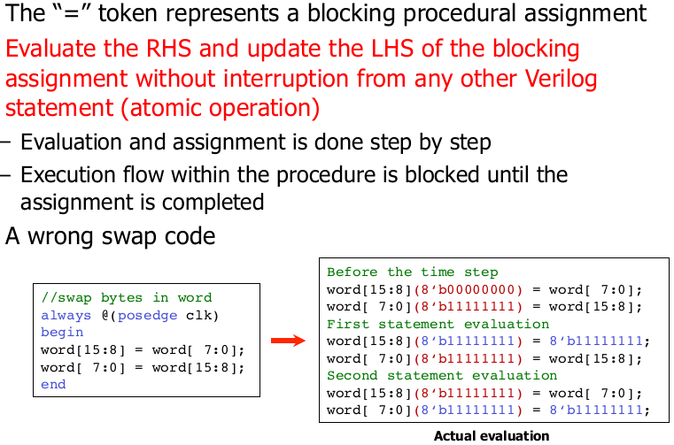
Nonblocking procedural assignments
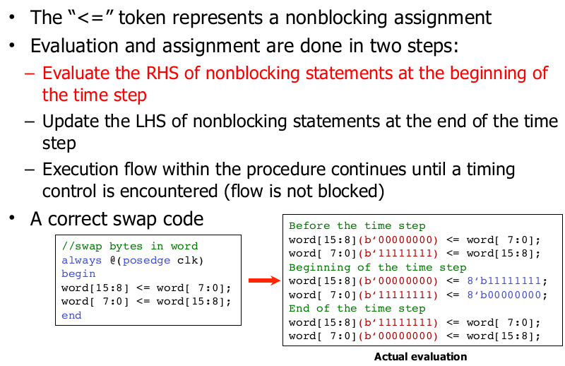
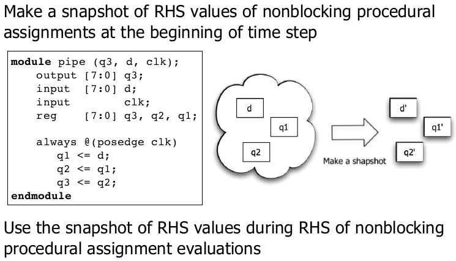
Blocking vs. nonblocking assignments
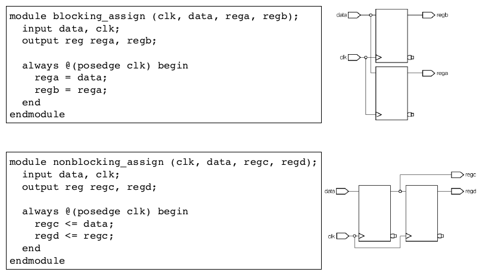
Assignment with delay
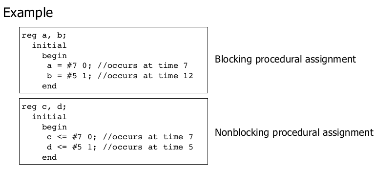
Stratified event queue
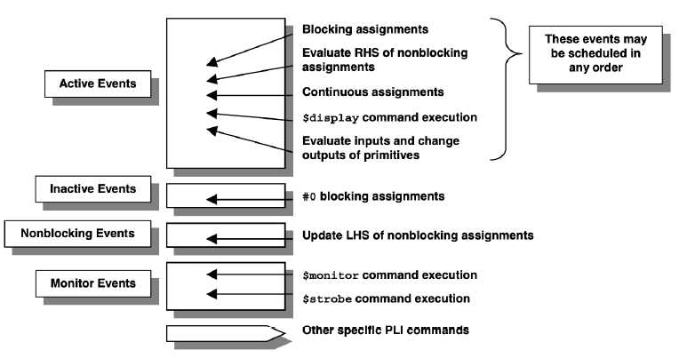
Recommended coding style
시험 출제됨
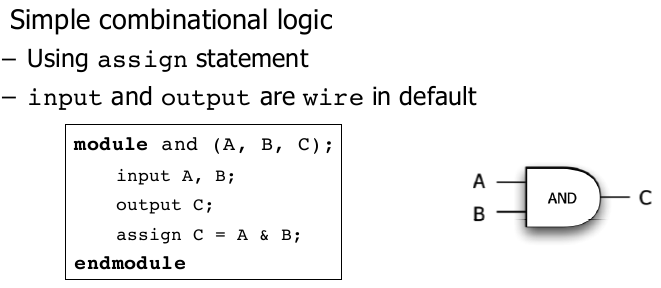
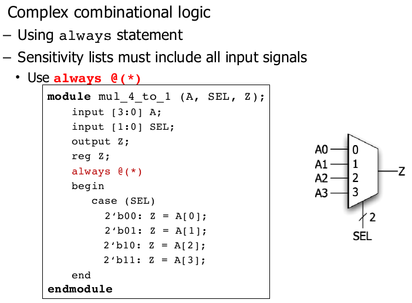
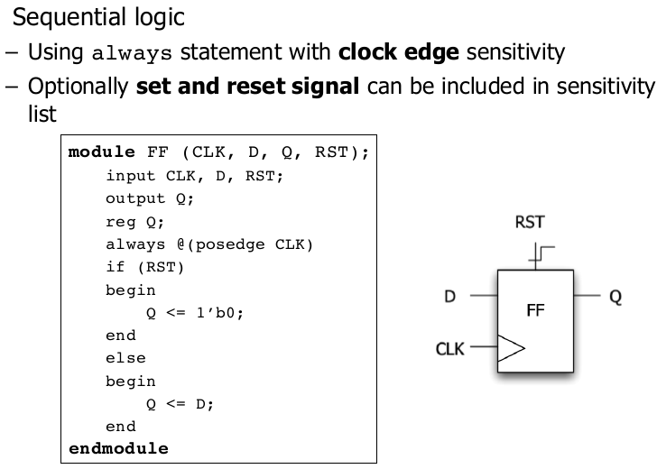
if -else if -else statement
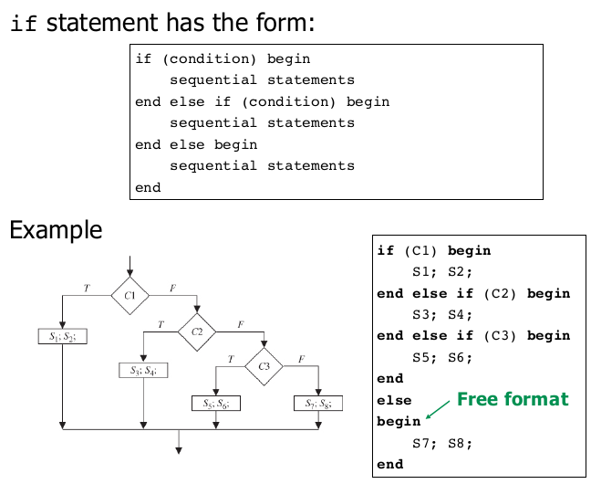
Case statement
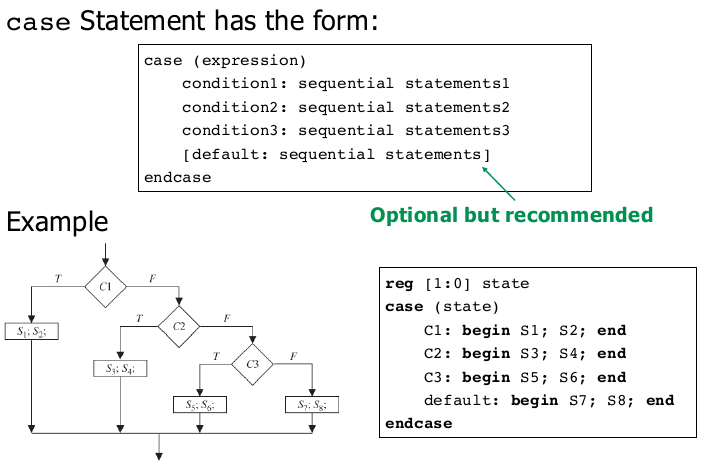
wire vs. reg
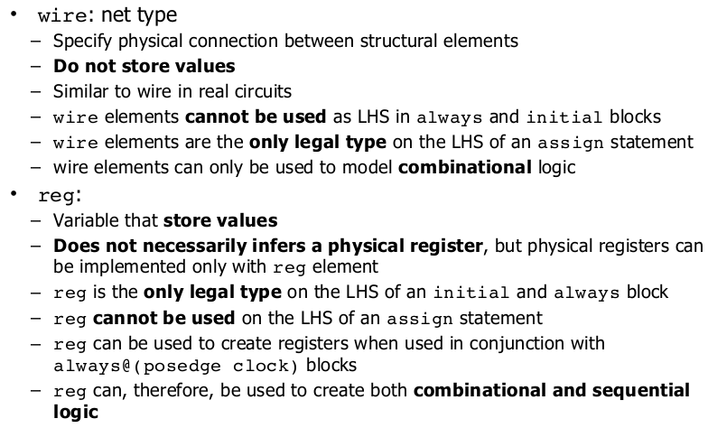
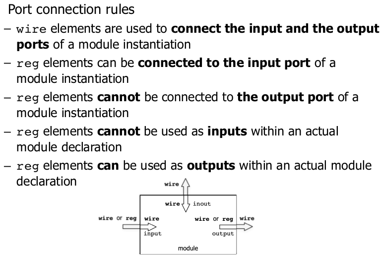
Summary
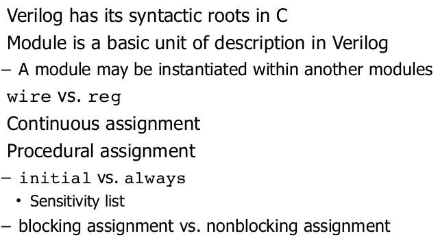
Sequential logic example
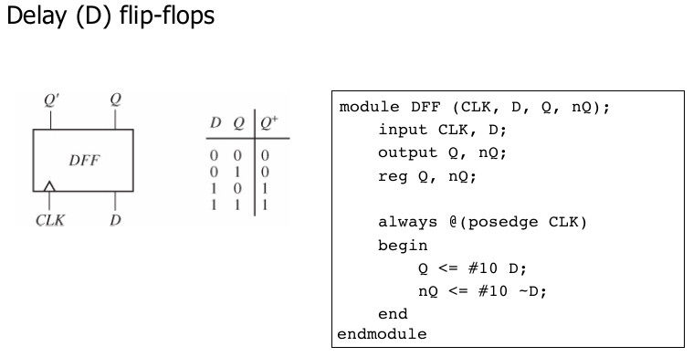
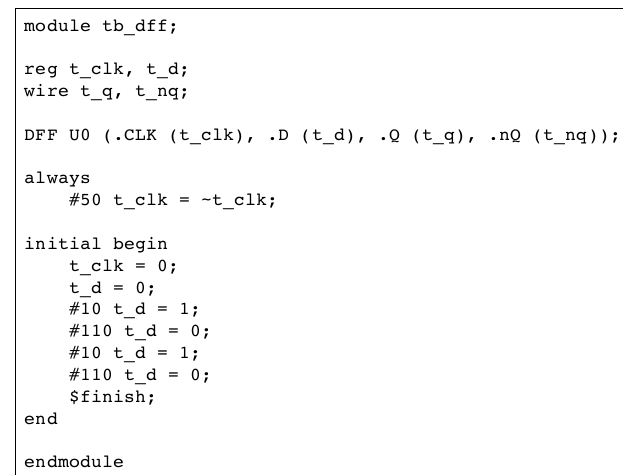
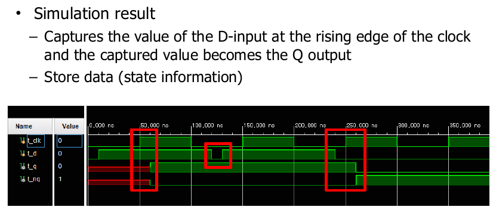
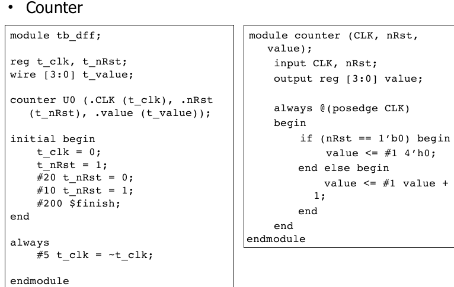
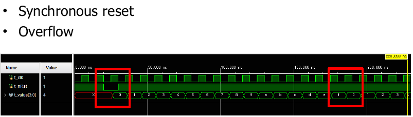
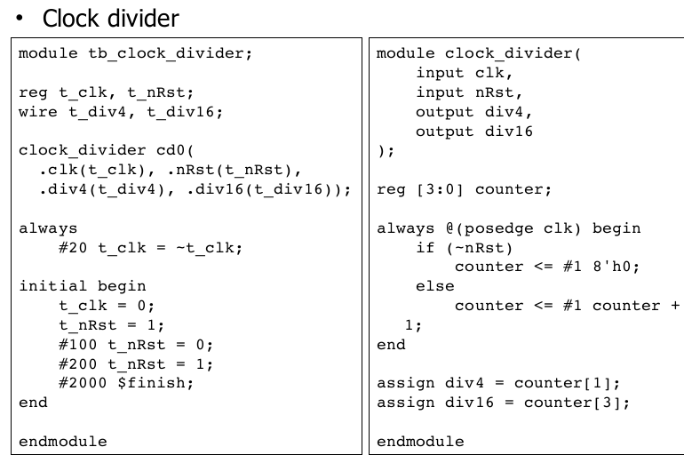
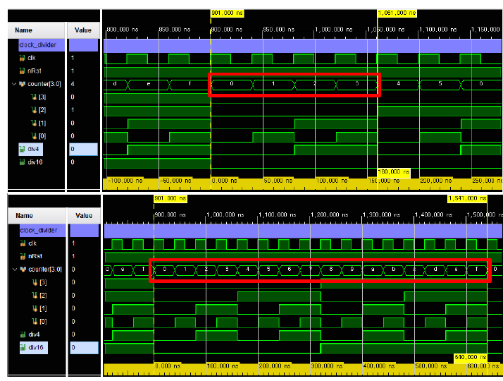